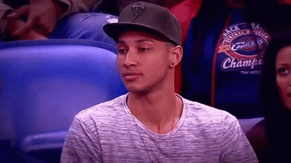

This section of the website is talking about all Ben Simmons flaws and how he shouldn't be ROTY
Ben Simmons has a extremely good all star player that helps him get his assits. Ben dosen't have a jumpshot and that is really unaccetable for the way the game is played now a days. Ben Simmons is now playing point guard and he can't shoot free throws in clutch moments and thats needed to be a elite player.
The Reason Ben Simmons shouldn't be ROTY is because he is not even a rookie. He got drafted in the 2016 draft, 1 overall pick and sat out the whole season socking up on how the Nba works. He was at every game study where his players like to get there shots and how he can use his ability to score a lot of points 